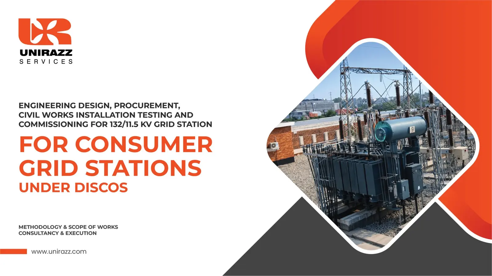
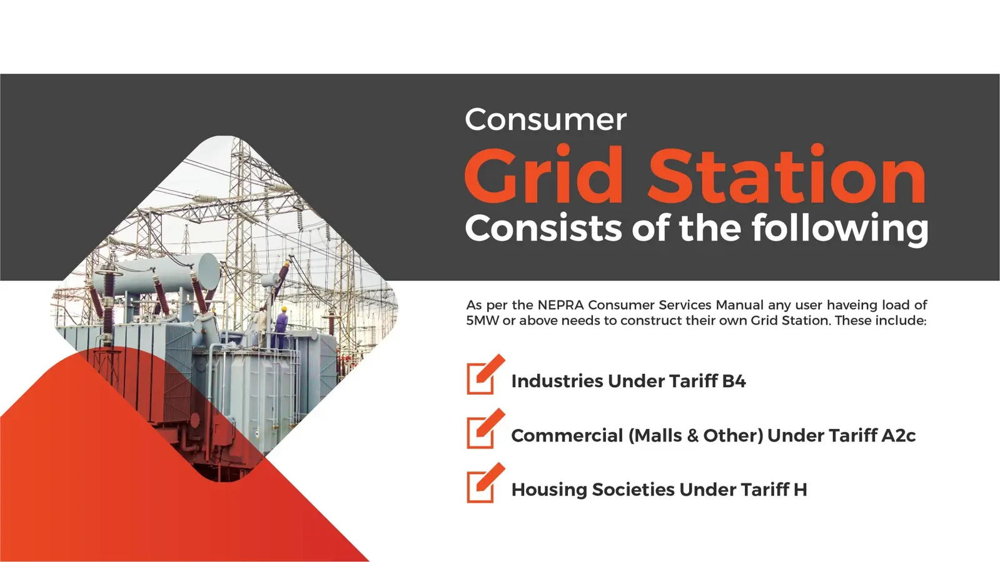
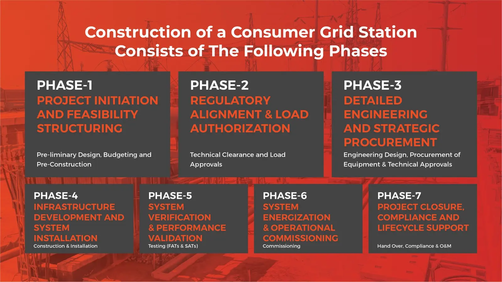

Load-flow studies
Voltage profile, transformer loading, losses, reactive demand and operating scenarios.
Unirazz Services brings studies, authority coordination, detailed engineering, procurement, civil and electrical construction, testing and commissioning together under one accountable EPCC delivery structure.

The consumer grid station route applies where the sanctioned load, tariff category and utility interconnection requirement call for dedicated high-voltage infrastructure.
The methodology addresses industrial consumers under Tariff B4, commercial developments and malls under Tariff A2c, and housing societies under Tariff H, with the final scheme governed by the applicable DISCO requirements and approved load allocation.

Unirazz Services is the first EPCC—Engineering, Procurement, Construction and Consultancy—firm to deliver Pakistan’s first commercial-tariff consumer grid station. That experience strengthens every decision from grid studies and scheme finalization to equipment integration, construction, commissioning and utility handover.
Every phase closes defined technical, regulatory, commercial and construction interfaces before the project advances to the next critical milestone.

Define the load objective, boundaries, site constraints, delivery model and information required to convert the requirement into a technically and commercially structured project.
Coordinate the application route, approved load, point of interconnection, service-connection requirements and authority submissions so that engineering proceeds against an agreed utility scheme.
Translate the approved scheme into coordinated primary, secondary, civil, control and protection designs, then procure compliant long-lead equipment against controlled technical specifications.
Execute the civil, structural, line and electrical works through an integrated programme with disciplined HSE, QA/QC, interface management and progress control.
Confirm that every asset, interface and protection function meets the approved drawings, specifications, utility requirements and safe-energization criteria.
Prepare and control the switching sequence, energize the installation in approved stages and demonstrate stable operation in coordination with the utility and the client.
Close the project with a complete technical record, trained operating personnel and a structured path for warranty, defects-liability and long-term asset support.
Unirazz Services offers best-in-class study capability from grid requirement and interconnection finalization to equipment duty, protection philosophy and approval-ready engineering.
Voltage profile, transformer loading, losses, reactive demand and operating scenarios.
Fault levels, equipment duties, breaker ratings and network contribution checks.
Relay philosophy, settings, grading, interlocks, trip logic and utility coordination.
Grid design, soil resistivity, touch and step potentials, bonding and lightning protection.
System insulation levels, surge protection, clearances and equipment interface checks.
Site optimization, bay arrangement, cable routes and transmission-line profiling.
Performance-based requirements, quantities, interfaces and measurable acceptance criteria.
Technical submissions, comments closure and coordination through final utility acceptance.
One-point coordination reduces design gaps, procurement delays and site-interface conflicts across the critical path.
Early interface mapping keeps authority approvals and long-lead equipment on the critical path, while coordinated engineering and site planning make the grid station constructible within the requisite timeline.
Before pricing or mobilization, Unirazz structures the client’s technical, site, procurement and contractual inputs into a controlled scope. This reduces assumptions, prevents interface gaps and allows realistic design, procurement and completion planning.
Start a scope discussion ↗Approved load, transformer and line bays, spare bays, capacitor banks, completion period and future expansion.
Soil investigation, contours, topography, site layout, route survey, technical clearance and environmental approvals.
Primary, secondary and civil design boundaries, BOQ ownership, client criteria and submission responsibilities.
Transformer, switchyard, protection, MV, telecom, cabling, earthing, DC system and country-of-origin preferences.
FAT and local inspection responsibility, utilities, labour facilities, HSE, security, insurance, testing and commissioning.
Transmission-line or deposit works, procurement route, payment instruments, guarantees, retention and agreed terms.
Bring Unirazz Services in early to align studies, approvals, design, procurement and construction around one delivery programme.
Talk to the grid station team ↗